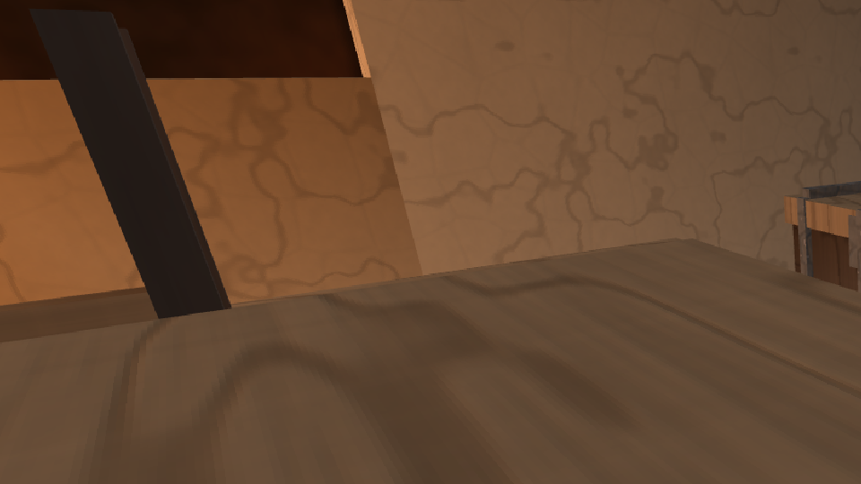
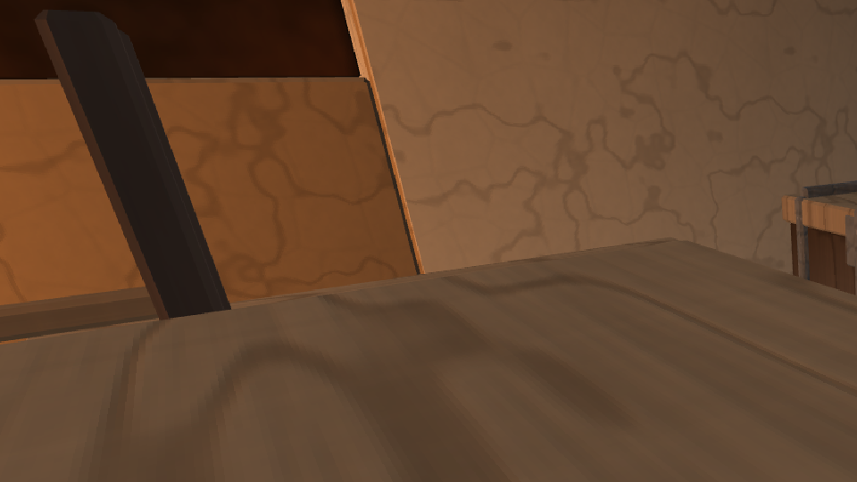
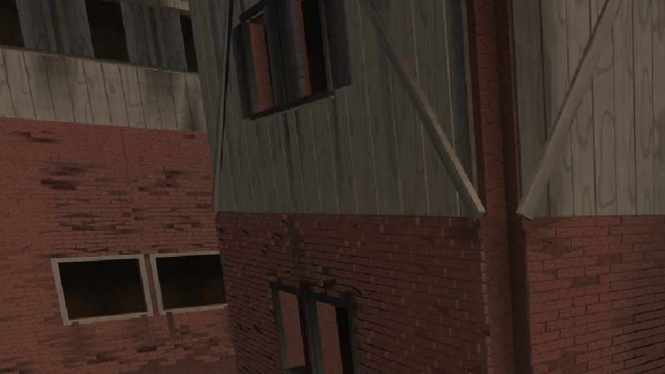
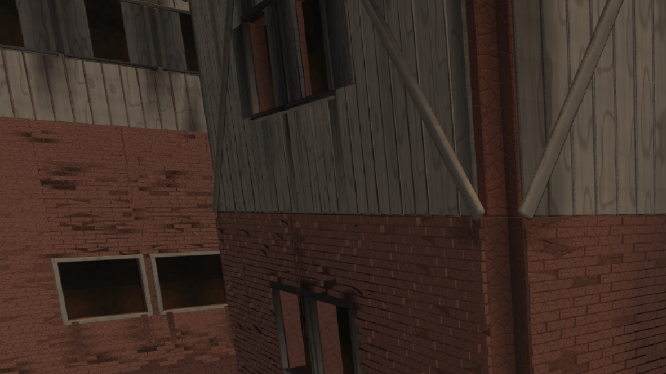

Волна материалов-1 · 28.08.2026 · дефект 3 ТЗ материалов, критерий К4 · устройство, судьба хэшей, прибор приёмки, числа до/после
DFN_HOUSE_BEVEL=0 воспроизводит прежнюю
геометрию бит-в-бит, и это проверено с двух сторон.
Записка ресёрчера №3 назвала это дефектом 3: во всём дереве слово bevel
встречалось ровно в одном файле — engine/anim/sources/BodyMesh.cpp, тела
персонажей. У домов, у убранства и у кузницы двора каждое ребро было идеально острым под 90°.
Прибор dfn_bevel_check, написанный этой волной, подтверждает диагноз числом:
на полке домов 1.03 % выпуклых рёбер имели излом мягче 50°, на полке убранства —
14.06 %, и оба остатка — это восьмигранные бревна и бочки, у которых 45° выходят по
построению, а не от фаски.
Фаска живёт в push_prism() (engine/world/sources/HouseBodies.cpp) —
и это единственное место, где она вообще должна была появиться. Девять модулей-алгоритмов
постройки (стены, плиты, лестницы, паркет, кровля, тела вокруг оси) кладут ВСЕ свои тела через
эту руку, поэтому одна правка доводит фаску до дома, до убранства и до запечённого предмета
реестра разом — без трёх копий, которые разошлись бы в первый день.
Призма — это контур, выдавленный вдоль оси. Фаска строит вокруг контура два кольца: внешнее (контур со срезанными выпуклыми углами — это продольные рёбра) и внутреннее (то же кольцо, вжатое внутрь на ширину фаски). Крышка и днище встают на внутреннем, между кольцами идут три пояса — фаска у днища, сам рант, фаска у крышки. Узкие грани углов приходят поясами наравне с широкими, отдельного кода у них нет. Нормали новых граней — под 45°, поэтому ребро ловит блик отдельной полоской, а не остаётся математической линией.
| имя | значение | что решает |
|---|---|---|
HOUSE_BEVEL_W_DEFAULT | 0.010 м | отступ грани от прежнего ребра; полоска фаски выходит в √2 раза шире — 1.4 см, то есть 23 пикселя с метра в FullHD. Верхняя граница — столярная правда: шире полутора сантиметров на доске в 4 см это уже не фаска, а восьмигранник. |
HOUSE_BEVEL_MIN_THICK_M | 0.008 м | тоньше — не брусок, а полотно: у ковра кромка завёрнута, у шкуры рвана, у бумаги смята. Столярной фаски там не бывает, а платить за неё пришлось бы вчетверо. |
HOUSE_BEVEL_COURSES | false | ряды кладки и кровли фаски не носят. Довод и цена — §4. |
HOUSE_BEVEL_TURN_DEG | 50° | предел излома, за которым ребро считается острым. Прямой угол под фаской распадается на два по 45°; порог обязан лежать между 45 и 90 с запасом в обе стороны. |
DFN_HOUSE_BEVEL | метры | доза (таблица AppDoors, 95→96 строк, пересчитано grep'ом). Названа ШИРИНОЙ, а не выключателем: цена в треугольниках от ширины не зависит вовсе, а вид зависит только от неё — сравнивать надо 5 мм с 15 мм, а не «есть» с «нет». |
Заказанные 10 мм — верхняя граница, не приказ. Каждое тело урезает её тремя ограничителями: четверть высоты (боковая грань не должна быть уже самих фасок), четверть кратчайшего ребра (вжатое кольцо не должно вывернуться), и по 0.45 длины каждого соседнего ребра на конкретном углу.
--bevel 0.06 побайтово равна выпечке при штатных 0.010, и делала
вывод «переусердствовать фаска не может по построению». Замер по всей полке (находка волны
номенклатуры, воспроизведена здесь):
| величина при 0.06 против 0.010 | сошлось из 35 |
|---|---|
| габарит (x / z / низ / верх) | 35 |
| число треугольников | 35 |
| байты тела | 12 |
cmp.
test_house_bevel.| что | меняется? | почему |
|---|---|---|
Полка чертежей assets/houses/*.dfh | нет, ни байтом | Фаска — свойство СБОРКИ тела, а не чертежа. Ни один рецепт её не объявляет и не мог бы: в чертеже нет ни поля, ни значения. |
Личность объекта реестра (object_content_hash) | да | В хэш входит сам меш (HouseSubmesh.mesh), а меш изменился. Это не побочный
эффект, а определение: тело стало другим. |
Полка объектов assets/objects/furniture | перепечена | 35 .dfo и INDEX.md переизданы этой же волной
(dfn_furn_objects) — иначе перечень разошёлся бы с движком молча.
Кладущий назван координатором. |
| Полки деревьев, набора, табличек | нет | Они не ходят через build_house_mesh: у них пустая секция HOUS, а пустой
список в личность объекта не входит (ObjectRegistry.cpp). |
| Боевые сцены городов | нет | Дом города строится из .dfh на загрузке — фаска приходит рантайм. |
dfn_furn_objects --bevel 0 воспроизвёл вчерашнюю полку (коммиты f8a9a8f,
bd28526, снятые ДО появления фаски в дереве) ПОБАЙТОВО: все 35 .dfo сошлись,
INDEX.md совпал. Это доказывает больше, чем внутренние рукава: правка не тащит за
собой никаких иных изменений движка, и ноль — действительно «прежняя острая полка», а не
«почти прежняя».
Полностью обфасоченная коробка — это 60 треугольников против 12. Это не расточительность реализации, а геометрический минимум требования «ни одного ребра без фаски»: два восьмиугольных торца плюс три пояса по восемь четырёхугольников. Ровно столько же даёт фаска любого пакета моделирования.
Отсюда столкновение, которое пришлось решать числами: К4 = 100 % и «полка не удваивается» несовместимы, если фаску получает ВСЁ. Замер на Вайтране:
| что | трис | к базе | К4 |
|---|---|---|---|
| без фаски вовсе (доза 0) | 1 275 072 | ×1.00 | 1.71 % |
| фаска ВЕЗДЕ, кладка и кровля тоже | 5 808 547 | ×4.56 | 99.29 % |
| фаска на телах, ряды без неё (принято) | 2 194 386 | ×1.72 | 54.74 % |
Ряды кладки и кровли стоят 3.2 млн треугольников — 71 % всей прибавки. Довод, по которому платят именно они, геометрический, а не бюджетный: кусок ряда ложится В ПОВЕРХНОСТЬ. Тыл кирпича утоплен в плиту стены, бока прижаты к соседям по ряду, низ уходит под кусок верхнего ряда — свободен у него только обвод лицевой грани, а на нём уже есть то, что фаска покупает: шов раствора, перевязка вполкуска и дрожь глубины. Из двенадцати рёбер фаска давала бы восемь замурованных.
Это рычаг, а не закон: HOUSE_BEVEL_COURSES = true вернёт фаску камню кладки за
втрое больший бюджет, и цена названа здесь, чтобы решение принимали по ней.
| предмет замера | трис до | трис после | к базе | К4 до | К4 после |
|---|---|---|---|---|---|
| полка домов, 225 рецептов | 3 594 110 | 5 306 112 | ×1.48 | 1.03 % | 43.28 % |
| Вайтран, 868 построек | 1 275 072 | 2 194 386 | ×1.72 | 1.71 % | 54.74 % |
| Житнов (Корнхолл), 5661 постройка | 11 829 248 | 17 539 454 | ×1.48 | 1.77 % | 42.23 % |
| стенд убранства, оболочка+очаг+пламя | 6 428 | 25 886 | ×4.03 | 3.49 % | 96.29 % |
| полка убранства, 35 предметов | 5 556 | 19 840 | ×3.57 | 14.06 % | 99.96 % |
Городские числа ниже полочных не случайно: город — это кладка, кровля и бревна, а убранство — доски и бруски, у которых свободны все двенадцать рёбер. Дороже всего фаска именно там, где она нужнее всего, и это верный порядок вещей, а не дефект.
Волна номенклатуры измерила у первой версии съехавшие габариты — кубок 0.11→0.10, корзина 0.50→0.49, голова зверя 0.51→0.49 — и это важная беда: габарит стоит колонкой в перечне объектов, по ней раскладка садит предметы на столешницы, и молча уехавший сантиметр — это уехавшая посуда.
Причина оказалась одна и чинилась целиком: у многогранника (кубок, корзина, бочка) крайнюю точку силуэта держит ОДНА вершина, и срез её двигал габарит внутрь. Но у восьмигранника излом и так 45° — фаска ему не нужна. С правилом «неострый угол не срезается» кубок и корзина сошлись ровно.
Осталось два тела из 35, и они не чинятся, потому что чинить нечего: у головы зверя и у косо поставленной ножки табурета крайнюю точку держит ОСТРАЯ ВЕРШИНА, а срезанный угол короче несрезанного — это определение фаски. Поэтому сторож проверяет не «ни одной десятой», а три вещи: габарит НЕ РАСТЁТ никогда; усадка не глубже ширины фаски на каждый срезанный конец; и всякая усадка ПЕЧАТАЕТСЯ поимённо — молчаливой она быть не может.
Черновик ресёрчера (tools/quality/measure_surface.py, 43 строки, вшитый список
работ и путь в чужой временный каталог) переведён в штатный прибор: разбор ключей, шапка с
авторством и порогами из §2 записки, декодер PNG с собственной шапкой, четыре рукава в ctest.
| критерий | чем меряется | где |
|---|---|---|
| К1 СТРУКТУРА | ДЕТАЛЬ ≥ 4.0 у матовых; поведение блика у гладких | кадр, участок |
| К2 ТОН | энтропия яркости ≥ 6.3 бит | кадр, участок |
| К3 ЦВЕТНОСТЬ | ≥ 200 цветов на 1000 пикселей | кадр, участок |
| К4 РЕБРО | доля выпуклых рёбер с изломом не круче 50° | геометрия, dfn_bevel_check |
| К5 ПОСАДКА | полоса контакта темнее той же поверхности на ≥ 15 % | кадр, два участка |
| К6 РАЗБРОС | два экземпляра расходятся по яркости на ≥ 4 % | кадр, два участка |
Порог ДЕТАЛЬ ≥ 4.0 выведен на матовых участках и честен только там. У полированного золота, стекла, льда, стоячей воды и свежей побелки локальной детальности почти нет ПО ПРИРОДЕ: такой участок провалит К1 именно потому, что сделан правильно, а исполнитель, глядя на красное число, добавит золоту зерно, которого там быть не должно. Поэтому К1 матовой ветвью применяется к веществам с шероховатостью ≥ 0.5, а гладкие судятся тремя замерами блика: блик ЕСТЬ; он НЕСЁТ ЦВЕТ вещества; он НЕ ВЫБИТ В БЕЛЫЙ. Второго прибора не заведено нарочно.
23 объекта полки из 35 несут в одном теле два вещества и больше: окованный сундук — это дуб И
железо, и средняя детальность такого объекта не описывает ни дуб, ни железо. Участок обязан
лежать внутри одной ЧАСТИ, а часть — это пара (плитка, тон), не «вещество»: у ковра кайма и поле
одного вещества, но разного тона, и это две части. На полке 83 части на 35 тел, счёт стоит
колонкой «кусков» в INDEX.md. Однородных по части тел шесть (jug, hide, cup, sack,
rail, bread). Список «гладких» ведётся поимённо и НЕ выводится из ординала вещества: земляной ком
в furn-plant — тот же mat=3, что и камень, и обязан остаться матовым.
| рука | ждём | получили |
|---|---|---|
| ровная заливка против К1 | КРАСНЫЙ | ДЕТАЛЬ 0.000 |
| волокно + зерно + шов против К1 | ЗЕЛЁНЫЙ | 17.523 |
| референсный кадр владельца, половицы (image copy 9) | ЗЕЛЁНЫЙ | ДЕТАЛЬ 5.538, энтропия 7.619, цветность 416.1 |
| полированное золото против МАТОВОЙ ветви К1 | КРАСНЫЙ | ДЕТАЛЬ 0.132 |
| оно же против ветви блика | ЗЕЛЁНЫЙ | блик ×2.81, цвет 1.00, выбито 0.0 % |
| блик, выбитый в белый, против ветви блика | КРАСНЫЙ | выбито 100 % |
| два побитово одинаковых стула против К6 | КРАСНЫЙ | расхождение 0.00 % |
| экземпляры со сдвигом тона против К6 | ЗЕЛЁНЫЙ | 10.36 % |
| затемнение 22 % / 5 % против К5 | ЗЕЛЁНЫЙ / КРАСНЫЙ | порог 15 % |
Строка о кадре владельца воспроизводит его же число из таблицы записки №3 («СКР половицы 5.538 7.619 416») — прибор считает ровно то, что считал черновик. Кадры владельца в git не идут, поэтому рука на них ПРОПУСКАЕТСЯ вслух, а не молча.
| рукав | что держит | плечо-отрицание |
|---|---|---|
test_house_bevel | восемь случаев: К4 коробки 0→100 %, габарит, полотно тоньше порога, ряды кладки, доза ниже порога побайтово, коллайдер, детерминизм | у каждого случая свой контроль внутри |
test_house_mesh | ПЛЕЧО НУЛЕВОЙ ДОЗЫ: все 38 сборок переведены на
0.0f и меряют прежнюю острую геометрию числами |
оно само и есть плечо |
bevel_k4_stand | К4 = 100 % на восьми телах убранства | bevel_k4_stand_zero_dose — тот же порог при нулевой дозе, WILL_FAIL |
quality_surface_selftest | девять контрольных рук прибора К1–К6 | пять из девяти обязаны ПРОВАЛИТЬСЯ |
furn_bevel_gabarit | габарит, бюджет тела (×3.57 при пределе ×4.5), перепечка дважды = одинаково | furn_bevel_gabarit_control с --limit 0, WILL_FAIL |
Прогон целиком: 127 из 127 зелёных (build_bevel, clang 22.1.8).

--bevel 0). Каждое ребро — линия без
ширины: стойка стула читается силуэтом, а не телом.


| кадр и участок | ДЕТАЛЬ до | после | СКО до | после | энтроп. до | после |
|---|---|---|---|---|---|---|
| дом: доски стены | 1.673 | 2.576 | 7.36 | 8.78 | 4.406 | 4.767 |
| дом: кладка (фаски НЕ получала) | 3.409 | 3.458 | 8.08 | 8.19 | 4.850 | 4.867 |
| стенд: столешница (внутренность грани) | 0.196 | 0.197 | 5.22 | 5.22 | 3.966 | 3.967 |
35 предметов, испечённых заново. Красным — тела, не дошедшие до 100 %.
| предмет | трис до | после | к базе | К4 до | К4 после |
|---|---|---|---|---|---|
| furn-armchair | 192 | 960 | x5.00 | 0.0 | 100.0 |
| furn-basket | 180 | 380 | x2.11 | 33.3 | 100.0 |
| furn-beasthead | 108 | 300 | x2.78 | 25.0 | 100.0 |
| furn-bed | 336 | 1664 | x4.95 | 0.0 | 100.0 |
| furn-bench | 48 | 240 | x5.00 | 0.0 | 100.0 |
| furn-books | 192 | 768 | x4.00 | 0.0 | 100.0 |
| furn-bottle | 140 | 300 | x2.14 | 33.3 | 100.0 |
| furn-bowl | 136 | 288 | x2.12 | 33.3 | 100.0 |
| furn-bread | 144 | 304 | x2.11 | 33.3 | 100.0 |
| furn-candlestick | 292 | 840 | x2.88 | 21.7 | 100.0 |
| furn-cauldron | 264 | 800 | x3.03 | 21.4 | 100.0 |
| furn-chair | 156 | 780 | x5.00 | 0.0 | 100.0 |
| furn-chandelier | 476 | 2124 | x4.46 | 0.0 | 100.0 |
| furn-cheese | 108 | 276 | x2.56 | 26.7 | 100.0 |
| furn-chest | 192 | 960 | x5.00 | 0.0 | 100.0 |
| furn-cup | 128 | 272 | x2.12 | 33.3 | 100.0 |
| furn-cupboard | 132 | 660 | x5.00 | 0.0 | 100.0 |
| furn-firewood | 224 | 480 | x2.14 | 33.3 | 100.0 |
| furn-fish | 120 | 544 | x4.53 | 0.0 | 100.0 |
| furn-garlic | 180 | 420 | x2.33 | 30.8 | 100.0 |
| furn-ham | 196 | 476 | x2.43 | 28.6 | 100.0 |
| furn-herbs | 124 | 532 | x4.29 | 6.7 | 100.0 |
| furn-hide | 60 | 160 | x2.67 | 5.0 | 91.8 |
| furn-jug | 180 | 452 | x2.51 | 28.2 | 100.0 |
| furn-painting | 60 | 300 | x5.00 | 0.0 | 100.0 |
| furn-plant | 204 | 604 | x2.96 | 22.2 | 100.0 |
| furn-plaque | 212 | 932 | x4.40 | 5.9 | 100.0 |
| furn-rail | 52 | 180 | x3.46 | 16.7 | 100.0 |
| furn-rug | 24 | 96 | x4.00 | 0.0 | 100.0 |
| furn-sack | 168 | 360 | x2.14 | 33.3 | 100.0 |
| furn-shelf | 96 | 480 | x5.00 | 0.0 | 100.0 |
| furn-shelf-wall | 72 | 360 | x5.00 | 0.0 | 100.0 |
| furn-stool | 108 | 540 | x5.00 | 0.0 | 100.0 |
| furn-table | 144 | 720 | x5.00 | 0.0 | 100.0 |
| furn-tapestry | 108 | 288 | x2.67 | 37.5 | 100.0 |
Единственное тело ниже ста процентов — furn-hide (шкура на полу): 8 рёбер из 98
остались острыми на вырезах между лапами, где соседнее ребро контура короче того, что фаска
просит. Остальные 34 — ровно 100.00 %.
MeshBuilder::bevel_m.
Кто будет менять умолчание — прочтите поправку в §2: 23 предмета убранства из 35
держит сегодня само число 10 мм, а не потолок по куску, и при большей ширине они поедут
(габарит и счёт треугольников при этом не дрогнут, то есть по ним беду не увидеть — сверять
байты).HOUSE_BEVEL_COURSES с ценой ×3 по городу — решение
координатора, не моё.| файл | что |
|---|---|
engine/world/sources/HouseBodies.cpp | фаска в push_prism: два кольца, три пояса |
engine/world/sources/HouseMesh.h/.cpp | четыре константы, параметр bevel_m, объявление меры К4 |
engine/world/sources/HouseEdges.cpp | новый: перепись рёбер меша — мера К4 |
engine/world/sources/HouseMeshDetail.h | MeshBuilder::bevel_m, BevelHold |
engine/world/sources/HouseWalls.cpp, HouseRoof.cpp | ряды кладки и кровли без фаски |
engine/app/sources/AppDoors.cpp, AppHouse.cpp | доза DFN_HOUSE_BEVEL |
tools/check_bevel.cpp | новый: dfn_bevel_check — К4 и счёт треугольников |
tools/quality/measure_surface.py, png_read.py | штатный прибор К1–К6 |
tools/quality/check_furn_gabarit.py | новый: сторож перепечки полки |
tools/forge_furniture_objects.cpp | ключ --bevel ради контрольной руки |
tests/core/HouseBevelTests.cpp | новый: плечо ненулевой дозы |
tests/core/HouseMeshTests.cpp | 38 сборок переведены на 0.0f — плечо нулевой дозы |
assets/objects/furniture/* | 35 .dfo и INDEX.md перепечены |